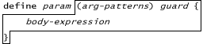

| |
Defining Functions |
||||||

As is familiar, this defines a simple function. The param variable is defined to hold this function. The value of the definition expression is the defined function. When the function is called, the arguments are matched against the argument patterns. If this fails, a ***to be specified exception is thrown. If this succeeds, then, in the context of the resulting variable definitions, the body-expression is evaluated. The value of the body expression is the value of the call as filtered by the guard. For most purposes, it works to think of the guard as a return type. Here's the familiar two-dimensional distance function
? pragma.syntax("0.8") ? def distance(x, y) :any { > (x**2 + y**2).asFloat64().sqrt() > } # value: <distance> ? distance(3, 4) # value: 5.0
The guard ":any" allows any value to be returned as the result of the call. The guard can be left out, in which case it defaults to ":void". A function whose guard is ":void" will always return null as its value.
Later in this chapter, we'll see how to define a distance function that works for any number of dimensions.
***need to put this somewhere: E does not have separate notions of parameter variables, local variables, instance variables, and class variables. Rather, E's one kind of variable serves all these uses.
Many languages prevent functions from being defined within functions, or place limitations on their lifetimes or scopes. Again, E gets extra power simply by not imposing common restrictions -- functions can be defined within functions. These inner functions can refer to any variable visible to them by the scope rules. And these inner functions continue to work after their outer function returns. Here's an outer function getterSetterPair that defines and returns a pair of inner functions, getter and setter . The variable value is defined in the arg-pattern of the outer function, and used by both the inner functions.
? def getterSetterPair(var value) :any {
> def getter() :any { value }
> def setter(newValue) :void { value := newValue }
> [getter, setter]
> }
# value: <getterSetterPair>
? def [g1,s1] := getterSetterPair(3)
# value: [<getter>, <setter>]
*** put somewhere: In traditional programming languages, there are restrictions that don't need to exist, and which if removed grant the programmer both greater power and greater simplicity. At the same time, current programming languages are missing the restrictions that must be imposed to enable the creation of secure software--software that you can run on your computer even though you don't trust the developer. As is shown by E, it possible to have a programming language that gives the programmer a sense of new-found freedom while at the same time sliding in, virtually unnoticed, the restrictions needed to enable secure software creation.
Notice that we're again using a List-pattern on the left to receive multiple return values into multiple variable definitions.
? def [g2,s2] := getterSetterPair("foo")
# value: [<getter>, <setter>]
Each time the outer function is called, a new value variable is defined, and two new inner functions that share this new variable are defined and returned.
? g1()
# value: 3
? g2()
# value: "foo"
? s1("bar")
? g1()
# value: "bar"
? g2()
# value: "foo"
The call to s1 sets the value variable it shares with g1 , but of course does not affect the value variable shared by g2 and s2 .
*** Does it make sense to show the getter setter incrementer example, sending it the constant 5, to demo how different this is from a conventional parameter?
***somewhere a forward reference to multiple facets, where they are in the book, and the fact that multiple facets are very important to implementing a secure system.
Unless stated otherwise, all text on this page which is either unattributed or by Mark S. Miller is hereby placed in the public domain.
| |
|
report bug (including invalid html)
|
||||||||